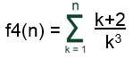

Objetivo:
Que apliques los conocimientos sobre el ciclo WHILE en el
desarrollo de un programa

Forma de
trabajo:
Actividad individual

Instrucciones:
- De manera individual, desarrolla el algoritmo y posteriormente el
programa completo en C para cada uno de los ejercicios que se presentan a
continuación.
- Entrega, vía la plataforma Canvas, los archivos *.c que contengan los
programas en C.
Ejercicios
Construye un programa completo en C libre de warnings y errores, que
incluya las siguientes funciones:
- La función f1 que recibe un valor entero mayor o igual
a uno y regresa el resultado de la siguiente sumatoria:

.
Por ejemplo:
f1(2) = ( 2(1) - 1
) + ( 2(2) - 1 ) = 4
f1(3) = (
2(1) - 1 ) + ( 2(2) - 1 ) + ( 2(3) - 1 ) = 9
- La función f2 que recibe un valor entero mayor o igual
a uno y regresa el resultado de la siguiente serie:
f2(N) = 40 - 41 +
42 - 43 ....
Por ejemplo:
f2(2) = 40 - 41 =
-1
f2(3) = 40 - 41 +
42 = 41
- La función f3 que recibe un valor entero mayor o igual
a uno y regresa el resultado de la siguiente serie:
f3(N)
= 3 * 6 * 9 *...* 3N
Por ejemplo:
f3(2) = 3(1) * 3(2) = 18
f3(3) = 3(1) * 3(2) * 3(3) = 162
- La función f4 que recibe un valor entero mayor o igual
a uno y regresa el resultado de la siguiente sumatoria:
.
Por ejemplo:

- La función multiplicacion que recibe dos números enteros positivos num1
y num2 y calcula la multiplicación de num1 por num2 utilizando el
ciclo while y la operación suma.
Por ejemplo:
Por ejemplo:
num1 num2
5 - 3 = 2
2
¿Cuántas restas se hicieron hasta que
num1 fue menor que num2? 1
- El procedimiento
menu que
despliegue el siguiente menú en pantalla:
A. f1
B. f2
C. f3
D. f4
E. Multiplicacion
F. Division
S. Salir
- En la sección del "main()" construya un
programa completo en C que utilice el procedimiento
menu y de acuerdo
a la opción seleccionada por el usuario utilice la función apropiada
de las implementadas anteriormente. Utiliza el estatuto de control
Switch.
- Recuerde que la captura de datos y
validación de valores debe ser realizada en la sección del "main (
)", pues las funciones NO pueden realizar las tareas de validación
o captura de datos.
- Guarda el archivo con el nombre: P_Matricula.c.

Especificaciones de entrega:
- Formato de entrega:
c
- Nombre del entregable:
P_matrícula.c
- Medio de entrega:
Se entrega en Canvas en la sección de Tarea: While
Instrucciones para enviar tus archivos por Canvas:
- Haz clic en el botón de
Tareas. Haz clic en la actividad de
Tarea: While
- Haz clic en el botón de
Entregar tarea.
- En el fólder de Carga
del archivo, haz clic en el botón de Examinar
y localiza el archivo *.py. Si necesitas agregar más
archivos, haz clic en +Agregue otro archivo, haz
clic en el botón de Examinar y localiza el otro
archivo *.py.
- Cuando hayas terminado de
subir tus archivos, haz clic en el botón de Entregar
tarea y listo!!
|